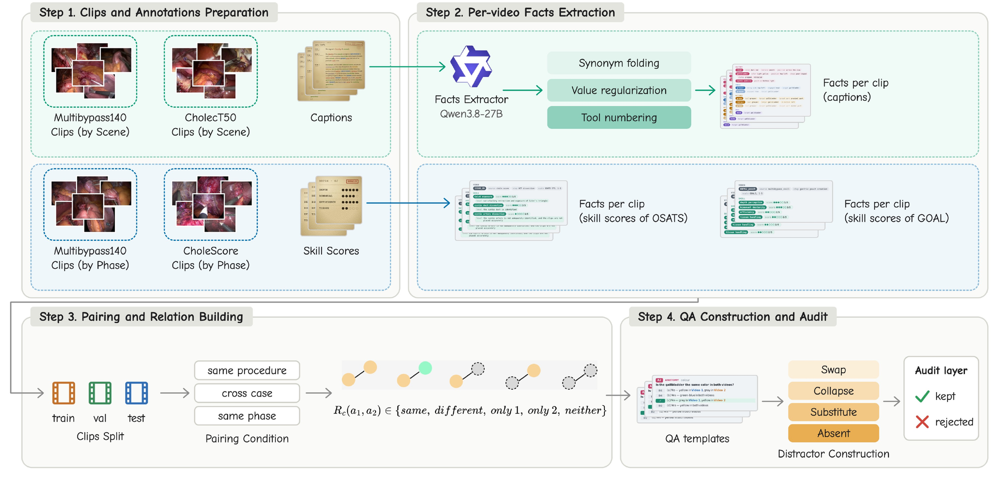
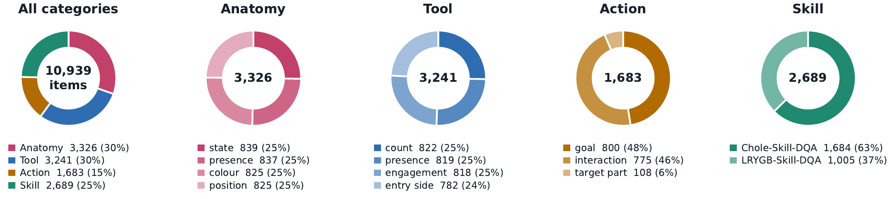
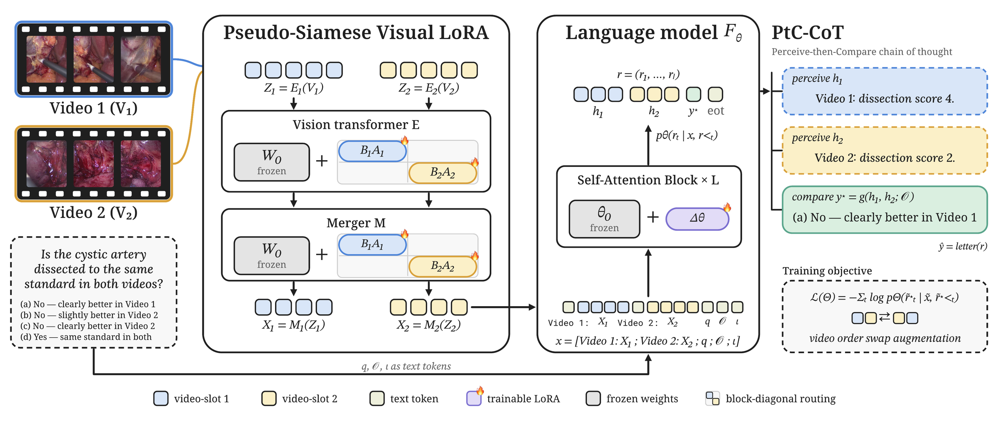

Comparing two surgical videos requires perceiving each video separately and binding every observation to the right video, and current VLMs often confuse which video shows what. We propose EndoComparer, a VLM for comparative surgical video question answering with two components. Pseudo-Siamese Visual LoRA gives each video slot its own low-rank adapter over a shared frozen vision encoder, separating the two videos in the visual pathway at the cost of a single encoder pass. Perceive-then-Compare reasoning trains the model to first state what each video shows, then derive the answer from these statements.
We also build EndoDiffVQA, a benchmark of 10,939 two-video multiple-choice questions over cholecystectomy and gastric bypass, covering anatomy, tool, action and skill, with every answer stated by the source clip captions or expert skill scores. EndoComparer outperforms strong generalist and surgical VLMs across all question categories. Ablations show that both components contribute, and the model answers more consistently when the two videos are swapped.
A benchmark built from captions and expert skill scores

Four subsets, two procedures
| Subset | Procedure | Source annotation | Questions | Clip length |
|---|---|---|---|---|
| Chole-Cap-DQA | Laparoscopic cholecystectomy | CholecT50 scene captions | Anatomy · Tool · Action | seconds to tens of seconds |
| LRYGB-Cap-DQA | Roux-en-Y gastric bypass | MultiBypass140 scene captions | Anatomy · Tool · Action | seconds to tens of seconds |
| Chole-Skill-DQA | Laparoscopic cholecystectomy | CholeScore OSATS-style criteria (1–5) | Skill | tens of minutes |
| LRYGB-Skill-DQA | Roux-en-Y gastric bypass | MultiBypass140 GOALS domains | Skill | tens of minutes |

The 13 question templates
| ID | Category | Attribute | Example stem |
|---|---|---|---|
| A1 | Anatomy | presence | Is the omentum visible in both videos? |
| A2 | Anatomy | colour | Is the gallbladder the same colour in both videos? |
| A4 | Anatomy | position | Is the gallbladder in the same part of the view in both videos? |
| A6 | Anatomy | state | Is the small bowel bleeding in both videos? |
| T1 | Tool | presence | Is a hook used in both videos? |
| T3 | Tool | entry side | Does the energy device enter from the same side in both videos? |
| T5 | Tool | count | Do both videos show the same number of instruments engaging the stomach? |
| T6 | Tool | engagement | Is the grasper actively engaged with the suture thread in both videos? |
| C1 | Action | interaction | Is the same interaction with the tissue shown in both videos? |
| C2 | Action | target part | Does a grasper hold the same part of the gallbladder in both videos? |
| C4 | Action | goal | Is the surgeon pursuing the same goal in both videos? |
| S1 | Skill | skill (CholeScore) | Is the cystic duct dissected to the same standard in both videos? |
| S2 | Skill | skill (MultiBypass140) | Is two-handed coordination of the same standard in both videos? |
Detecting a difference is not the same as specifying it
The five relations group into Same = {same, neither} and Different = {different, only 1, only 2}. Each source is scored with three metrics, reported as the mean over the four sources (4-source macro). Every answer weighs the same, so collapsing to one answer scores low whichever answer it is.
Detect macro-F1
Macro-F1 of the Same / Different decision. It charges both missed differences and false alarms.
Specify accuracy
Among items whose correct answer is Different and which the model also called Different, the share where it picks the exact option: which video, which value, how much better. A source where the model calls fewer than 20 items Different is excluded and marked (†).
Strict macro-F1
Macro-F1 over exact answers, averaged over the answer classes of each question family and then over families. For presence: {same, only 1, only 2, neither}; for skill: {better in 1, better in 2, same}.
Why not accuracy. A model that always answers “the same” is rewarded by accuracy whenever differences are rare, and models also exploit option position and wording. Strict weighs every exact answer equally within each question family, so collapsing to one answer scores low, and Detect and Specify show where the remaining errors come from.
Keep the two videos apart where they can be confused
A Siamese vision encoder applies identical weights to both inputs and leaves the binding entirely to the language model. EndoComparer separates the two videos in the visual pathway and in the reasoning.

EndoDiffVQA is hard for current VLMs
Comparison with baselines
| Model | 4-source macro | Strict per subset | |||||
|---|---|---|---|---|---|---|---|
| Detect | Specify | Strict | Chole-Cap | LRYGB-Cap | Chole-Skill | LRYGB-Skill | |
| Zero-shot | |||||||
| Qwen3.5-9B | 49.8 | 57.3 | 35.4 | 41.3 | 34.4 | 31.6 | 34.3 |
| Qwen3.8-27B | 52.8 | 58.9† | 35.2 | 38.7 | 33.8 | 44.7 | 23.6 |
| InternVL3.5-8B | 49.7 | 54.5† | 30.6 | 44.7 | 25.5 | 28.6 | 23.6 |
| InternVL3.5-30B | 56.6 | 57.1 | 37.2 | 44.5 | 32.0 | 36.3 | 36.1 |
| SurgVidLM | 51.5 | 49.2† | 32.1 | 32.5 | 24.9 | 39.2 | 32.0 |
| GPT-5.5 | 49.5 | 56.3 | 32.9 | 45.8 | 25.9 | 35.2 | 24.7 |
| Gemini 3.6 Flash | 59.1 | 75.1 | 46.9 | 53.9 | 46.9 | 43.1 | 43.7 |
| Fine-tuned on EndoDiffVQA | |||||||
| InternVL3.5-8B | 61.6 | 85.3† | 47.0 | 66.3 | 51.7 | 46.4 | 23.6 |
| SurgVidLM | 60.0 | 88.3† | 45.1 | 62.6 | 52.2 | 38.0 | 27.5 |
| SurgTEMP | 60.9 | 88.9† | 46.8 | 64.3 | 52.9 | 42.6 | 27.5 |
| SurgViVQA | 52.4 | 37.5 | 32.6 | 32.9 | 33.1 | 36.9 | 27.4 |
| PeskaVLP | 61.3 | 63.3† | 44.6 | 53.9 | 44.8 | 47.7 | 31.9 |
| SurgCLIP | 61.4 | 57.3 | 43.5 | 54.0 | 45.4 | 47.5 | 27.2 |
| Qwen3.5-9B (backbone) | 63.6 | 77.6 | 48.3 | 64.6 | 49.4 | 43.3 | 31.1 |
| w/o PSVL (PtC-CoT only) | 64.0 | 78.0 | 49.5 | 65.3 | 51.6 | 44.9 | 33.4 |
| w/o PtC-CoT (PSVL only) | 65.6 | 80.3 | 50.9 | 68.3 | 52.5 | 43.3 | 32.6 |
| EndoComparer (ours) | 67.1 | 82.0 | 52.5 | 69.6 | 54.4 | 51.9 | 38.9 |
EndoDiffVQA test split, 2,300 items, %. Detect, Specify and Strict are 4-source macros; the last four columns give Strict per subset. † Specify macro over fewer than four subsets because the model called fewer than 20 items Different in the others; not highlighted. Best per group in bold.
BibTeX
To be added.